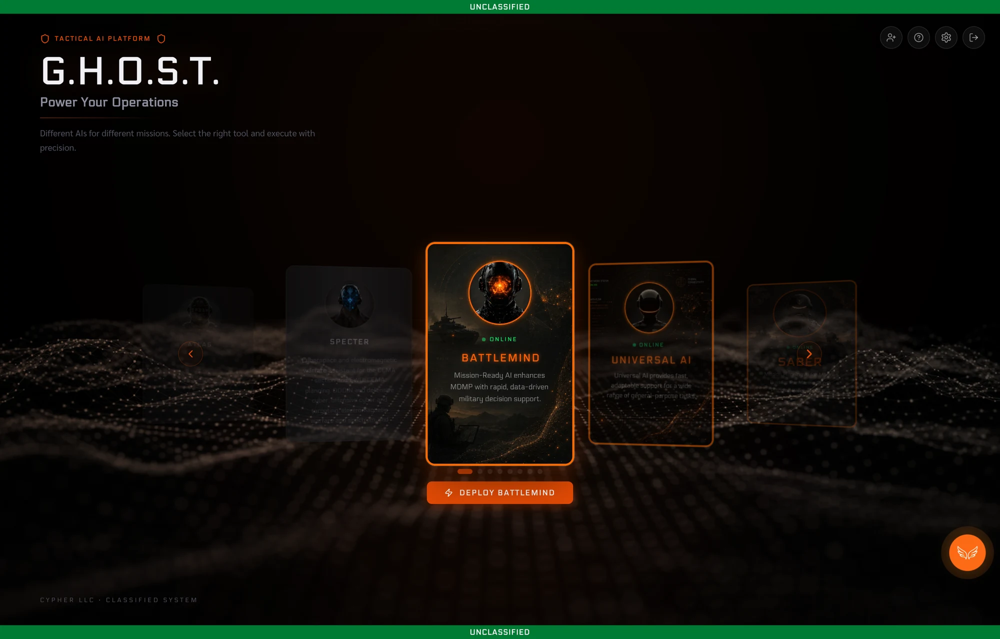
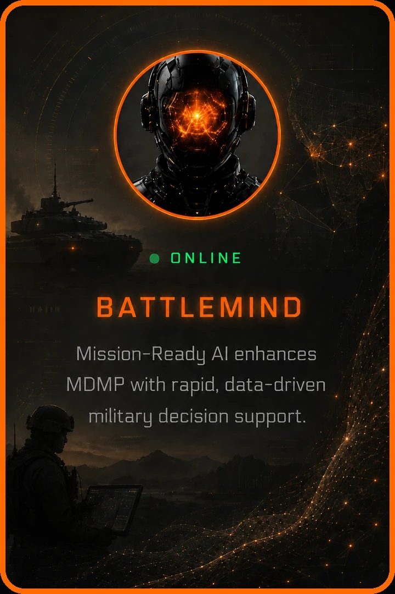
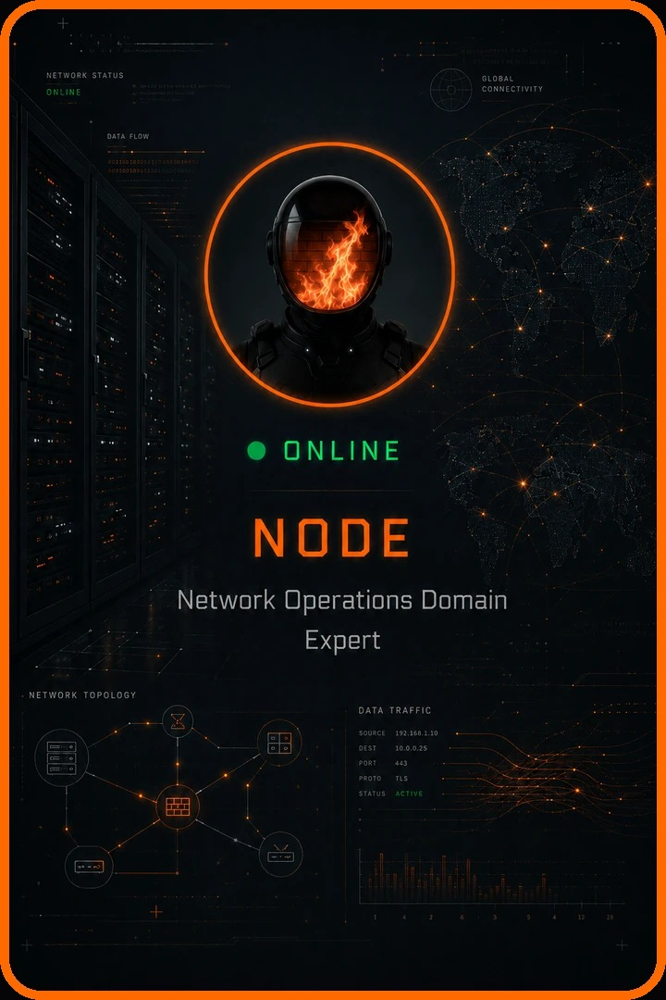
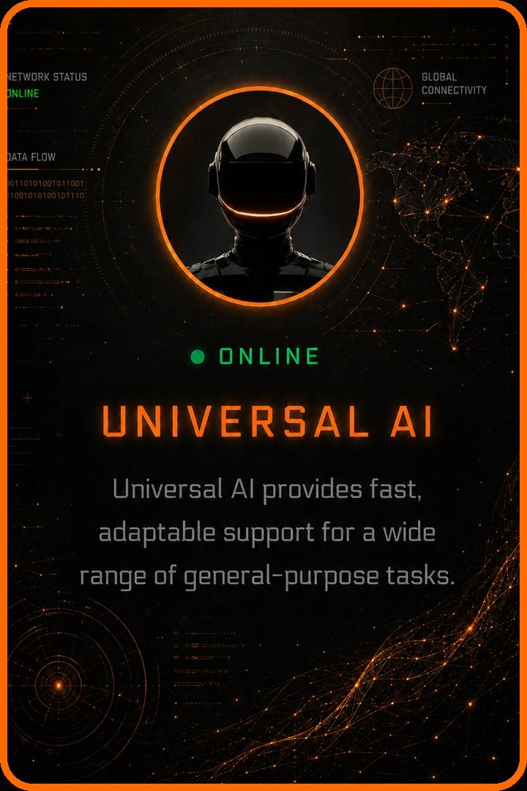
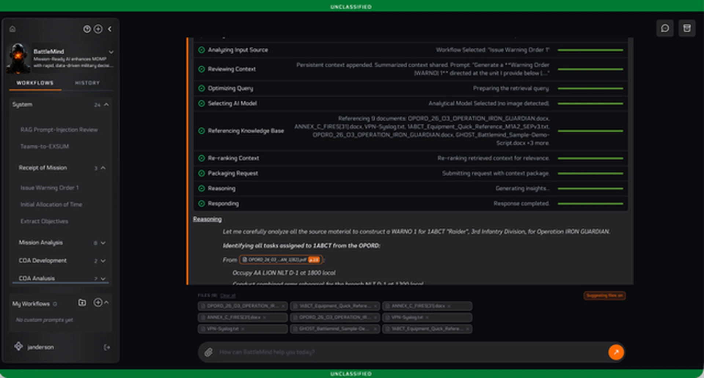

Platform
Capability
Brochure
One platform. Any mission. Anywhere.
A commercial AI platform for mission-driven decision dominance.
OfflineOn-premSIPR / JWICSDisconnected


One platform. Any mission. Anywhere.
A commercial AI platform for mission-driven decision dominance.
G.H.O.S.T.™ (Guided Heuristic On-Prem Support & Troubleshooting) is a commercial, modular agentic AI platform - hardened and operationally proven for the demands of national security and defense - delivering agentic, multi-step automated workflows across both cloud and on-device deployment models, giving operators the flexibility to leverage enterprise cloud infrastructure when available while retaining full mission capability with zero cloud dependency, zero data exfiltration risk, and no connectivity requirement.
G.H.O.S.T. hosts, orchestrates, and extends a growing library of mission-specific AI agents purpose-built for virtually any mission objective - including BATTLEMIND, a doctrine-trained agent for Army mission planning and warfighting functions that automates the Military Decision-Making Process and accelerates course of action development; NODE for network diagnostics and automation; AMBASSADOR for real-time translation and cultural advisory support; and ARIA for advanced intelligence research and analytical fusion - each capable of executing complex, multi-step tasks with minimal human intervention regardless of network environment.
The platform has been operationally validated in austere and denied environments across multiple theater-level exercises, including Pacific Pathways in the Philippines, JPMRC Yama Sakura in Japan, and STAFFEX, demonstrating its ability to automate staff workflows and accelerate decision cycles whether connected to enterprise systems or operating entirely at the tactical edge.

G.H.O.S.T. is not a prototype or a proof of concept - it is a fielded, operational agentic AI system actively supporting live mission requirements within elements of the government, proven across both secure cloud environments and fully disconnected forward deployments.
This enables a plug-and-play AI ecosystem deployable in forward-deployed field environments, SCIFs, Closed Enclaves, TOCs or Enterprise environments - without sacrificing capability or security.
Most enterprise GenAI platforms excel at generalized writing and analysis but remain fundamentally chat-centric tools. G.H.O.S.T.'s AI agents are built for operational time-to-resolution, driven by doctrine-aligned structures, unit-grounded references with full traceability, and mission-specific, one-click automated workflows that mirror how staffs actually plan, decide, and execute - rather than delivering a generic model wrapped in a user interface.
G.H.O.S.T. does not rely on the model as the differentiator. Value is created through the orchestration of workflows, retrieval-augmented generation, and context window that encode institutional knowledge, producing outputs with the fidelity, judgment, and structure typically achievable only by seasoned operators.
An agent working a tasking: the plan is shown first, every step is on screen, and the answer arrives cited.

Mission-Ready Military Decision Support
An MDMP-focused agent trained on Joint and Army doctrine, designed to accelerate Course of Action (COA) development, WFF product generation, image terrain analysis, mission analysis, and staff planning. Used in live Division HQ operations.

Network Operations & Infrastructure Analysis
A network diagnostic and automation agent capable of identifying misconfigurations, generating CLI commands, analyzing logs, and simplifying network troubleshooting - ideal for disconnected tactical networks, secured enclaves, and data centers.

General-Purpose Assistant & Concierge
A general-purpose cognitive assistant pre-trained for high-assurance environments. Accepts structured and unstructured inputs (PPTX, DOCX, PDFs, imagery), and supports everything from intelligence production to acquisition planning.
Step 1
Choose the agent for the job. Each agent is built for one mission area. Pick one from the roster, or let G.H.O.S.T. Mode choose the team for you.

Step 2
Approve the mission. State the task in plain language and attach your files. The plan is shown first, and nothing runs until a person approves it.
Step 3
Watch it work. Every step shows on screen: what it searched, which documents it read, and which model it used.

Step 4
Review the findings. Results arrive ranked, with evidence, assumptions and gaps, ready for a person to review and approve.

Agent workspace
Doctrine-grounded planning. A planning agent works an operations order: each step, source and model choice is on screen, and the answer cites the document it came from.

Assessment
Gaps are shown, not hidden. Fathom reconstructs a system from evidence and says plainly what the evidence does not prove.

Guided setup
A name and an address are enough. Fathom asks a few plain questions before it looks at anything, and scheduled sweeps keep the system watched afterward.

Collection
Read-only by design. Collection goes tier by tier. Locked doors are recorded as unknowns instead of being forced.
Supports modernization of federal digital infrastructure by:
While G.H.O.S.T. is primarily offline, its architecture supports easy modular transition to FedRAMP-authorized cloud enclaves for hybrid deployment scenarios. G.H.O.S.T. is ATO ready for DoD and IC networks.
Our platform has been deployed and validated in high-stakes, real-world environments across multiple combatant commands and partner nations. Below are examples of successful field implementations.
These use cases demonstrate G.H.O.S.T.'s effectiveness in enabling mission command and accelerating staff workflows under real-world operational constraints - no connectivity, high operational tempo, and doctrinal precision.
G.H.O.S.T. delivers rapid, low-friction value at the edge - no integration delays, no network dependencies, and no guesswork. Unlike legacy enterprise AI solutions that require cloud migration, lengthy ATO processes, and heavy resourcing, G.H.O.S.T. can be fielded within days and demonstrate value within hours.
G.H.O.S.T. is available today for classified and unclassified use. It is actively deployed, validated, and ready for broader service adoption.
UEI and CAGE Code available upon request.